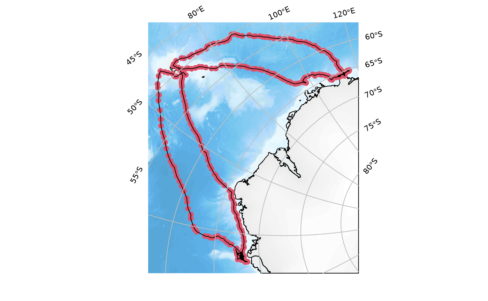
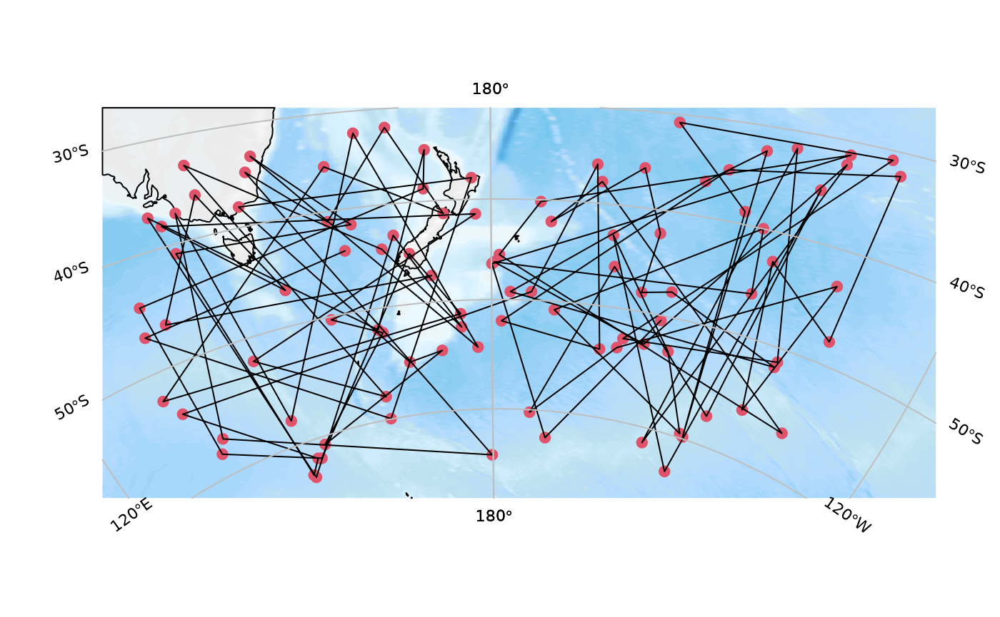
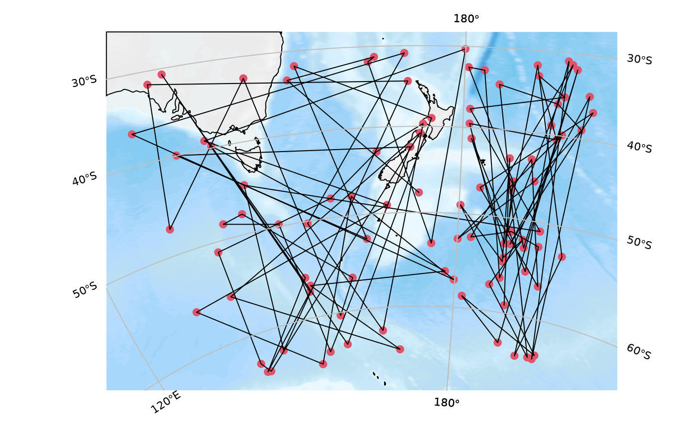

library(SOmap)
#> Loading required package: raster
#> Loading required package: sp
# lonrange, latrange
# lonvec, latvec
# sp, sf object
# raster, stars object
# file
set.seed(1)
SOmap_auto()
SOmap_auto(target = "+proj=laea +lat_0=-20 +ellps=WGS84")
llx <- c(100, 120)
lly <- c(-60, -30)
SOmap_auto(llx, lly)
SOmap_auto(llx, lly, target = NULL)
SOmap_auto(cbind(llx, lly), target = NULL)
SOmap_auto(SOmap_data$mirounga_leonina$lon, SOmap_data$mirounga_leonina$lat, target = "laea")
SOmap_auto(SOmap_data$mirounga_leonina$lon, SOmap_data$mirounga_leonina$lat, centre_lon = 147)
SOmap_auto(SOmap_data$mirounga_leonina$lon, SOmap_data$mirounga_leonina$lat, target = NULL)
## causes crash for yet-to-be-investigated reasons
SOmap_auto(ice)
## causes crash for yet-to-be-investigated reasons
SOmap_auto(ice, target = "laea", centre_lon = 147, centre_lat = -42)
SOplot(ice, col = palr::ice_pal(100))
## causes crash for yet-to-be-investigated reasons
SOmap_auto(ice, centre_lon = 147, centre_lat = -42)
SOplot(ice, col = palr::ice_pal(100))
## causes crash for yet-to-be-investigated reasons
SOmap_auto(ice, target = "merc", centre_lon = 147, centre_lat = -42)
SOplot(ice, col = palr::ice_pal(100))
SOmap_auto(x = c(10, 60), y = c(-40, -70))
SOmap_auto(x=c(10,60), y=c(-40,-70), trim_background = FALSE)
#> Warning in SOmap_auto_inner(x = x, y = y, centre_lon = centre_lon, centre_lat =
#> centre_lat, : 'trim_background' argument to SOmap() is defunct

Handle missing values in input data.
temporarily turn this off …
data("albatross", package = "adehabitatLT")
## convert the albatross data to a single matrix of lon, lat points
albatrack <- do.call(rbind, lapply(albatross, function(z) terra::project(rbind(as.matrix(z[, c("x", "y")]), NA), from = "+proj=utm +zone=42 +south +datum=WGS84", to = "EPSG:4326")))
## construct the map and return it, but don't plot it
alb_map <- SOmap_auto(albatrack[, 1], albatrack[, 2])
alb_map